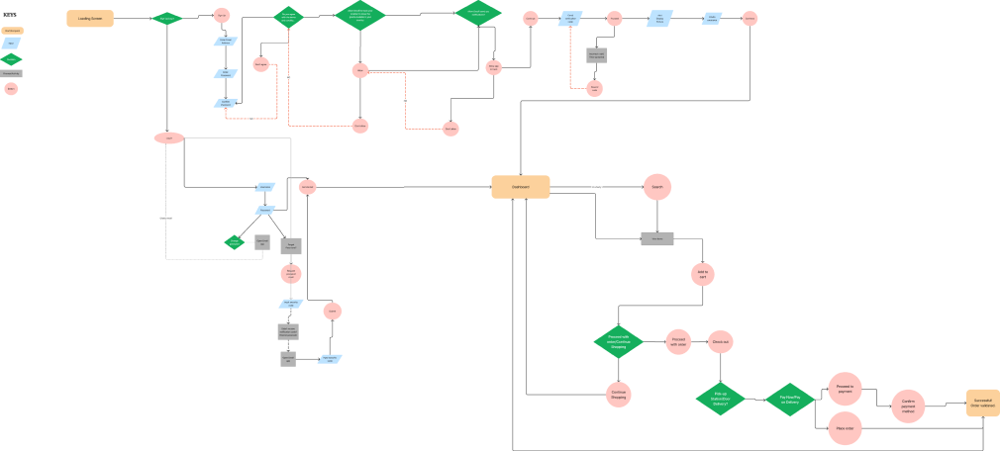

Feedwell
Grocery Shopping App
Role
- User Research
- Interaction
- UI Design
- Prototyping
- Information Architecture
Tools
- Figma
- Photoshop
Grocery Shopping App
Feedwell is an online shopping app that allows users to shop for freshly harvested food from the convenience of their phone and get it delivered to their doorstep
Feedwell partners with local farmers and food producers to offer a wide selection of freshly harvested fruits, vegetables, meats and dairy products
Users can shop for their favorite foods anytime, anywhere, using their mobile device. The app allows them to browse products by category, search for specific items, or explore curated collections.
Grocery shopping can be a tedious and overwhelming task characterized by hours spent planning and organizing shopping trips, including creating lists, navigating crowded aisles, searching for desired products frustration, stress when encountering out-of-stock items and long checkout lines.
Create a functional shopping app that allows users discover and shop for variety of freshly harvested food from wherever using their mobile device and have it delivered to their doorstep.
I conducted a user research using the survey method in which 24 repondents participated.

I was able to create a persona that represents the main user group.

After creating my persona, I decided to place her in a specific situation when she can use the product.
After creating my persona, I decided to place her in a specific situation when she can use the product.
Based on the user flow, I designed the simple app map that’s functional and easy to navigate.